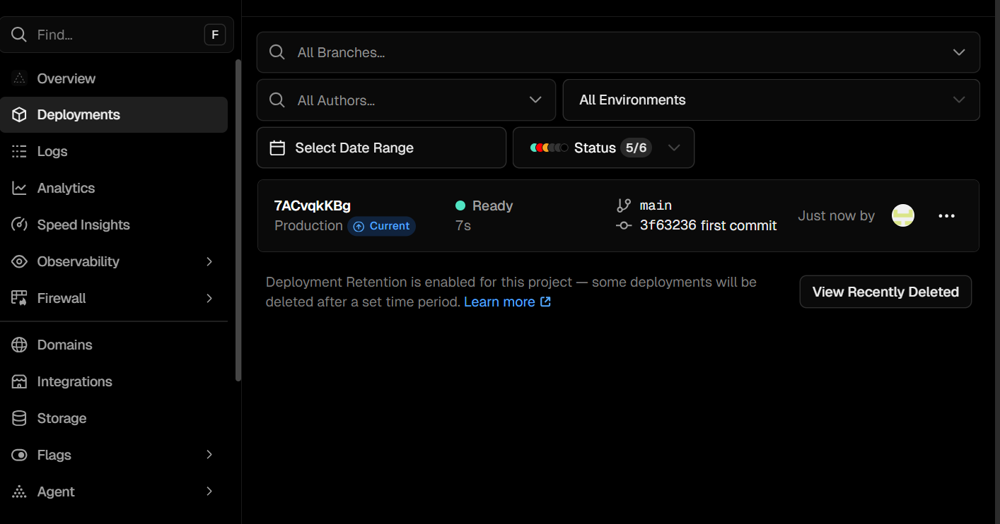

a) Platform Choice & Rationale
I built a lightweight e‑portfolio using static HTML, CSS, and minimal JavaScript, and will deploy it on Vercel. This approach is fast, free for personal projects, and well‑suited to purely client‑side sites. Vercel’s platform automatically serves static assets (HTML/CSS/JS), provides preview and production environments, and integrates with Git for easy updates [1]. On the content side, I followed semantic HTML guidance to improve accessibility and structure, making pages easier to navigate and to export for screenshots [2].

Deployment flow: local edits → Git push → Vercel deploys to a live URL.
How I will deploy to Vercel
- Create a GitHub repository and push this folder.
- On vercel.com, add a new project and import the repo.
- No build command is needed (pure static). Set the root to the repository root.
- Click Deploy to get a live URL; add a custom domain if desired [1].